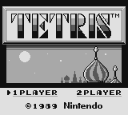

Writing a Game Boy emulator is an absolute blast — until it suddenly isn’t.
Tetris has a reputation for being “easy,” but it still threw me a few proper curveballs.
I have written a ZX Spectrum emulator before, which was a good project to start from. It doesn’t need too many chips emulating, and the Z80 CPU is fairly straight-forward to implement.
Fancying another challenge, I picked the Game Boy. It has a CPU partially based on the Z80, but also needs a PPU (graphics chip) and sound chip to emulate.
The first game I wanted to get working – Tetris. This is apparently a popular goal, as a) it’s a good game, b) it’s classic, and c) it fits within 32KB so the ‘cartridge’ doesn’t need any fancy RAM bank switching implemented.
That said, I did have a few stumbling blocks. To save others time, I’ve documented them…
All source code freely available here: https://github.com/deanthecoder/G33kBoy
If you want the quick checklist, skip to the TL;DR at the end

1. 💾 Cartridge ROM Must Be Read-Only
(aka: Tetris Will Cheerfully Eat Its Own Code)
Tetris is a great first ROM because:
- it fits entirely into 32KB
- no MBC (bank controller)
- no bank switching
- predictable behaviour
Because it’s simple, it’s tempting to map the whole ROM into writable memory starting at address 0000.
This isn’t the whole story.
If your emulator allows writes to the cartridge region, Tetris will happily scribble over its own ROM during startup. The result:
- corrupted tiles
- broken backgrounds
- glitchy sprites
- behaviour that changes depending on timing
The confusing part is that VRAM looks correct when the game copies tiles… but the source ROM had already been damaged, so you end up copying garbage.
Fun fact: Games sometimes write to “read‑only” regions to detect hardware behaviour — so this isn’t as strange as it sounds.
How do you fix this? Just make any writes to the first 32KB of memory a no-op.
2. 🎮 Joypad Register (FF00) Matters More Than Expected
This one genuinely surprised me.
Tetris reads the joypad status almost immediately after boot.
If your FF00 (JOYP) implementation is even slightly wrong, you don’t get the copyright screen — What I saw:
One flashing horizontal line forever.
Very dull.
- Implement
FF00as a proper readable register (See PanDocs) - Honour the “select buttons” and “select d‑pad” bits
3. 🚀 OAM & DMA — What They Are and Why You Need Them
OAM (Object Attribute Memory) lives at FE00–FE9F.
It holds 40 sprite entries, each containing:
- X/Y position
- tile index
- palette/flip flags
Games update OAM constantly — if this region is wrong, sprites misbehave.
OAM DMA is triggered by writing any value to FF46.
The hardware then copies 160 bytes from <value> * 0x100 into OAM.
Tetris performs this DMA, so you must support it.
A minimal implementation is fine:
- copy 160 bytes from the chosen page
- during DMA, CPU can only access HRAM (but Tetris doesn’t rely on this)
Even a very simplified version works reliably for Tetris.
4. 🧠 You Don’t Need a Fully Accurate CPU (But You Do Need a Correct One)
When people say “Tetris breaks on opcode X,” the real culprit is often:
- a different instruction that sets flags incorrectly
- PC increment errors
- broken push/pop logic
- interrupt timing being slightly off
- EI/DI behaviour not matching hardware
If your CPU passes the Blargg tests, you’re in great shape.
There are many instructions Tetris doesn’t use (or at least, doesn’t use early on…). I’d recommend running the ROM and adding each instruction your code reports to be ‘unimplemented’.
5. 🔌 Boot ROM Unmapping — Don’t Forget This!
On power‑on, the Game Boy maps a tiny boot ROM at 0000–00FF.
This code:
- scrolls the NINTENDO logo down the screen
- verifies the logo bytes stored in the cartridge
When the animation finishes, the CPU writes to FF50, which you need to ensure un-maps the boot ROM and reveals the actual cartridge beneath it.
If you forget this step:
- the logo comparison fails
- the game reads incorrect data
- Tetris won’t boot or displays corrupted graphics
This one is easy to miss.
6. 🖼️ PGM Output — The Simplest Possible Debug Image Format
Before building a full UI, you can dump the framebuffer as a PGM image. Not critical for Tetris, but handy utility code to have.
PGM is dead simple:
P2
160 144
255
<160*144 grayscale values>It opens in GIMP, Photoshop, ImageMagick, and even some VS Code extensions.
Perfect for debugging early PPU output.
I keep tiny PGM and TGA writers in my helper library:
https://github.com/deanthecoder/DTC.Core
7. 📡 Capturing Blargg Test Output Through a Fake Serial Port
The legendary Blargg CPU tests verify:
- arithmetic
- flags
- timing
- EI/DI behaviour
- stack correctness
- subtle edge cases
These tests output their results through:
FF01— SB (serial buffer)FF02— SC (serial control)
You can write a tiny SerialDevice that:
- collects bytes written to SB
- appends them when SC triggers a transfer
- exposes the full output string
This lets you run Blargg CPU tests without a PPU, entirely through unit tests.
/// <summary>
/// Minimal bus to allow capturing of serial output, used by the Blargg tests when no PPU is implemented.
/// </summary>
internal class SerialDevice : IMemDevice
{
public ushort FromAddr => 0xFF01;
public ushort ToAddr => 0xFF02;
/// <summary>
/// Transfer data, Serial Control.
/// </summary>
private readonly byte[] m_data = new byte[2];
private readonly StringBuilder m_output = new StringBuilder();
public string Output => m_output.ToString();
public byte Read8(ushort addr) => 0x00;
public void Write8(ushort addr, byte value)
{
switch (addr)
{
case 0xFF01:
// Transfer data.
m_data[0] = value;
return;
case 0xFF02:
// Serial Control.
m_output.Append((char)m_data[0]);
m_data[1] = 0x01;
break;
}
}
}⚡ TL;DR — How to Get Tetris Running
You only need part of the system working:
✔ CPU
- Must pass the individual blargg tests
- Correct EI behaviour, DAA, flags, signed ops
- HALT not fully required
- STOP not needed
✔ Memory
- Cartridge ROM must be read-only
- Boot ROM mapped at
0000–00FFuntilFF50write - No MBC/bank switching required
✔ Joypad (FF00)
- Must honour select bits
- Must not default to zero
- Interrupts optional
✔ DMA
- Implement OAM DMA (
FF46) - Simple “copy immediately” version works
✔ PPU
You don’t need cycle accuracy.
Just enough to draw:
- background tiles
- basic sprites
- VBlank interrupt
Use PGM output and the Acid2 test ROM to confirm correctness.
✔ Testing Workflow
- Run blargg tests via fake serial device
- Use Acid2 for PPU validation
✔ Common Pitfalls
- forgetting to unmap boot ROM
- allowing writes to ROM
- incorrect flags
- wrong joypad behaviour
🔗 Useful Links
- My G33kBoy Emulator:
https://github.com/deanthecoder/G33kBoy - DTC.Core Utilities:
https://github.com/deanthecoder/DTC.Core - Pan Docs:
https://gbdev.io/pandocs/ - Acid2 PPU Test:
https://github.com/mattcurrie/gb-test-roms/tree/master/acid2 - blargg CPU Tests:
https://github.com/retrio/gb-test-roms